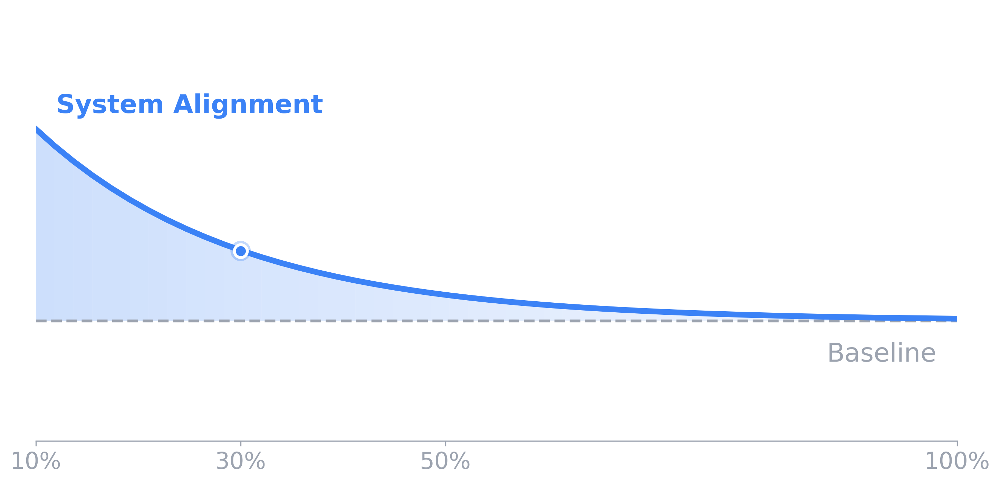
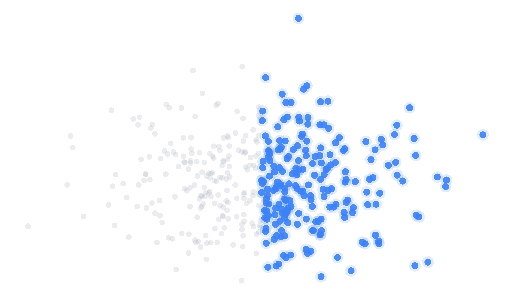
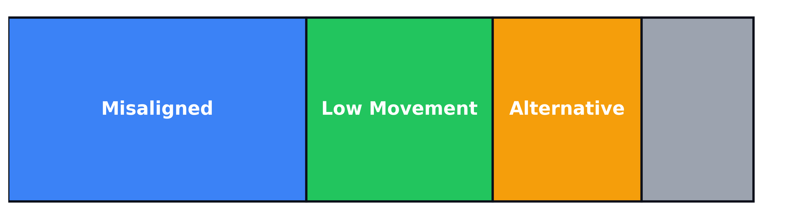
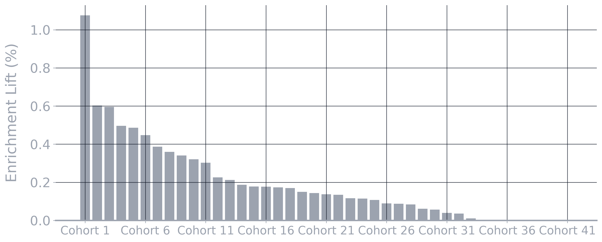

The system is evaluated across independent cohorts using a fixed biological representation with no dataset-specific training.
Biological structure is preserved across datasets, and treatment response follows alignment within that structure.
Validation performed across multiple independent cohorts spanning psychiatry, immunology, oncology, and systemic disease.
Patients aligned with biological structure show higher response rates.

Top-X enrichment curve demonstrating increased response in biologically aligned patients.
Patients organize into consistent biological states across datasets.

Non-response is not random — it follows distinct biological patterns.

The effect is observed across independent cohorts.

Conditional interpretation based on population context (e.g., sex) improves enrichment in balanced cohorts without altering the underlying system.